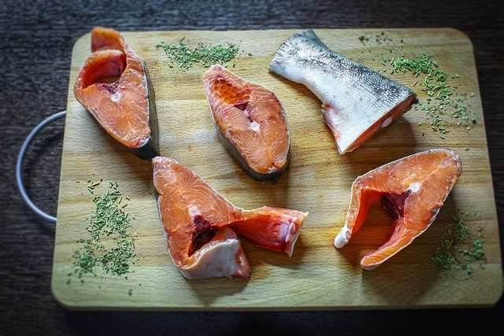
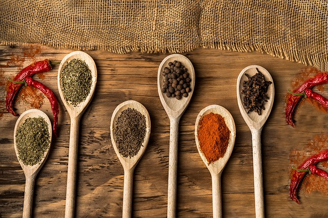

Explore Fresh Ingredients
Delight your taste buds with the freshest ingredients. Whether you're cooking up a seafood feast or adding a touch of elegance to your dishes, nothing beats the flavor of fresh fish.
Discover the Joy of Cooking
Cooking isn't just about sustenance; it's an art form that can bring immense joy and satisfaction. At Culinary Delights, we're here to help you unlock your culinary creativity and explore the wonderful world of cooking.
Benefits of Cooking as a Hobby
- Express Your Creativity: Cooking allows you to experiment with flavors, textures, and presentation, giving you a creative outlet in the kitchen.
- Relaxation and Stress Relief: Many people find cooking to be a therapeutic activity, helping them unwind and destress after a long day.
- Healthier Eating Habits: When you cook at home, you have control over the ingredients you use, leading to healthier and more nutritious meals.
Join Our Culinary Community
Join our vibrant community of food enthusiasts and embark on a culinary journey together. Share your favorite recipes, exchange cooking tips, and connect with like-minded individuals who share your passion for good food.
Get Inspired in the Kitchen
Whether you're a beginner or an experienced cook, our platform is filled with inspiration to fuel your culinary adventures. From mouthwatering recipes to helpful cooking techniques, we've got everything you need to take your cooking skills to the next level.
Enhance Your Dishes with Spices
Transform your meals with the vibrant flavors of aromatic spices. From exotic blends to classic favorites, spices add depth and complexity to your dishes, taking them to new culinary heights.
Start Cooking Today
Ready to start your culinary journey? Join us at Culinary Delights and discover the joy of cooking for yourself. With our easy-to-follow recipes and helpful resources, you'll be whipping up delicious meals in no time.